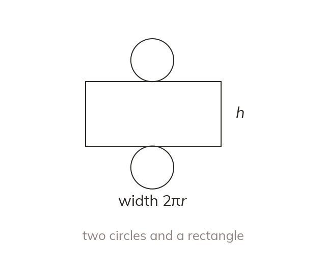

A cylinder's net gives its formula
A cylinder's net is two circles and a rectangle. The rectangle's width is the circumference, So surface area
A cylinder's net is two circles and a rectangle whose width is the circumference, giving total surface area